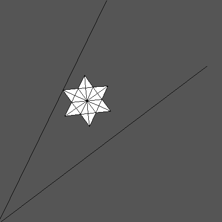
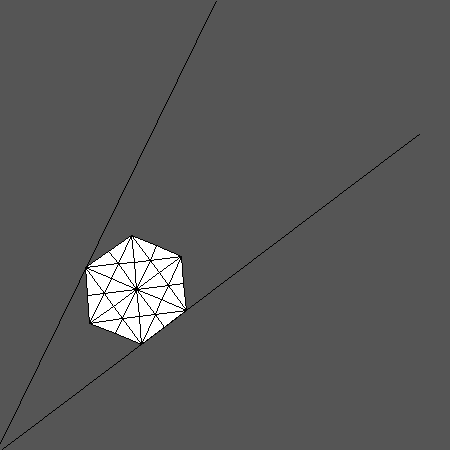
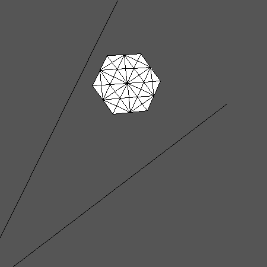
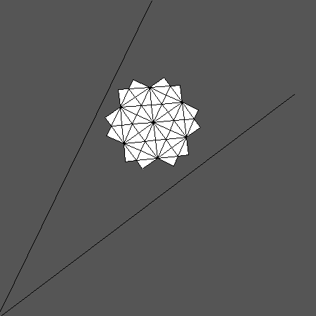
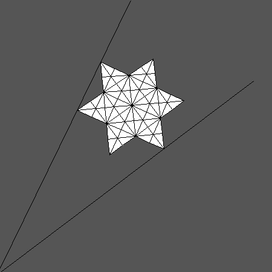
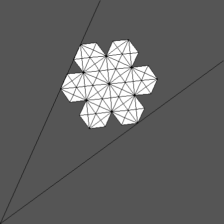
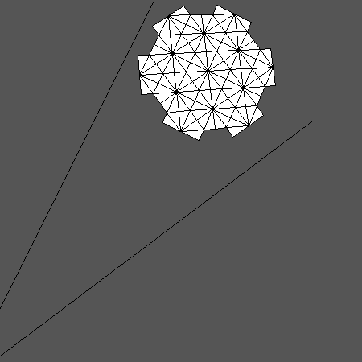
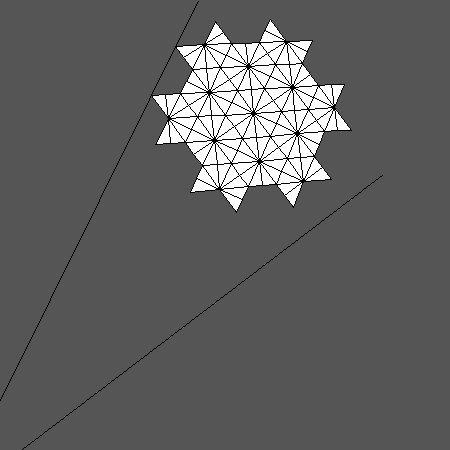
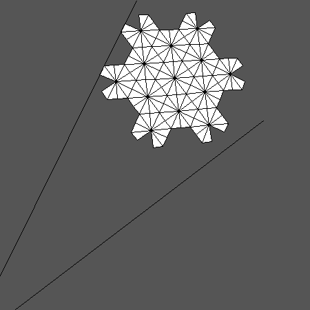
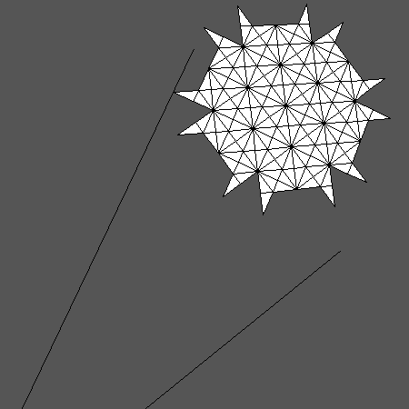

...and here are most of the generic patterns for G2, captured from the
G2.2 schema (see [MartinWestbury08] for the complete description of
parabolic Kazhdan-Lusztig polynomials in these cases,
if you do not want to read them off from the output of "tilt" yourself!):










[MartinWestbury08] P Martin and B Westbury, Parabolic Kazhdan-Lusztig polynomials and
representation theory for G2, in preparation.